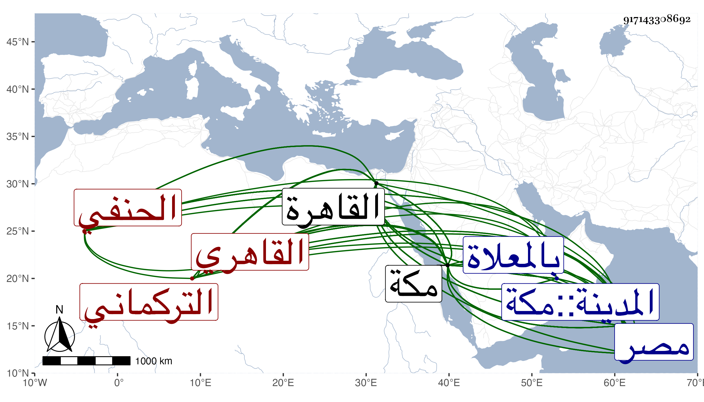

0902Sakhawi.DawLamic.ITO20230111-ara1.EIS1600.917143308692
Biography ID: 917143308692
142
تغرى برمش بن يوسف بن المحب أبا اغلى ، ورأيت من كتبه علي بن عبد الله الزين أبو المحاسن التركماني الاقحالي القاهري الحنفي . قال شيخنا في أنبائه قدم القاهرة شابا وقرأ على الجلال التباني وغيره وداخل الامراء الظاهرية وصارت له عصبة ، وكان يتعصب للحنفية مع محبته لأهل الحديث والتنويه بهم وتعصبه لأهل السنة وإكثاره الحط على ابن العربي ونحوه من متصوفي الفلاسفة ومبالغته في ذلك بحيث صار يحرق ما يقدر عليه من كتبه بل ربط مرة كتاب الفصوص في ذنب كلب وصارت له بذلك سوق نافقة عند كثيرين وقام عليه جماعة من أضداده فما بالي بهم مع انه لم يكن بالماهر في العلم ، ولما تسلطن المؤيد عرفه فقربه وأكرمه واستأذنه في الحج والمجاورة بعد أن قرب منه بعض تلامذته فسافر إلى مكة فأقام بها من سنة سبع عشرة إلى أن مات . وصار التلميذ المشار إليه ينفق سوقه به ويحصل له الأموال ويرسلها له فتزايد جاهه وكتب له توقيع بتغيير المنكرات فأبغضوه ورموه بالمعائب حتى قال فيه شعبان الآثاري من أبيات : مبارك ابرك فيه ما يرى وذكره في معجمه فسمى والده عبد الله وقال إنه كان متعبدا تخرج به جماعة وكان قائما في هدم البدع الاعتقادية كثير العصبية للسنة مع محبته للحنفية ، وكان المؤيد يعظمه ، وحج في ولايته فجاور بمكة إلى أن مات . وقد اجتمعت به مرارا وسمعت كلامه وفوائده ، وكان أعداؤه يقعون فيه كثيرا ويتهمونه بأمر فظيع ، وذكره الفاسي في تاريخ مكة وقال إنه ذكر انه عنى في بلاده بالعلم ثم أتى وهو شاب القاهرة وعنى فيها أيضا بفنون من العلم وأخذ بها عن جماعة أكابر كالجلال التباني ، قال وكان يستحضر فيما يذكره من المسائل أو تجري عنده ألفاظ بعض المختصرات في ذلك ولكنه كان قليل البصارة والذكاء وكان يستحضر كثيرا من الكلمات المنكرات الواقعة في كلام ابن عربي وغيره من الصوفية وذكر ما أشار إليه شيخنا وأنه كان قد سأل عنه وعن كتبه البلقيني وغيره من أعيان علماء المذاهب الأربعة بالقاهرة فأفتوه بذم ابن عربي وكتبه وجواز اعدامها فصار يعلن بذمه وذم أتباعه وكتبه وتكرر ذلك عصرا بعد عصر ، قال وكان قد صحب جماعة من الترك بمصر واستفاد بصحبتهم جاها وتعظيما عند أعيان الناس بالقاهرة وغيرها في دولة الظاهر ثم ولده ثم المؤيد مع أن جل أيامه كان بمكة ولذا كان يصل لأهل الحرمين على يديه منه بر كثير وكتب له مرسوما بانكار المنكرات المجمع عليها وأمر الحكام بمعونته في ذلك ونالته الألسن كثيرا بسبب ذلك لعدم دربته في صرف المبرات ومبالغته في المنكرات بل ربما أوقع به الفعل بعض العوام وكان الظفر له وانتفع بصحبته أناس من أهل الحرمين ، وذكر من وقائعه أشياء أكثرها مما يستحسن وأرخ وفاته ليلة الأربعاء مستهل المحرم سنة ثلاث وعشرين وأنه دفن في صبيحتها بالمعلاة وحمل اليها فيما يحمل فيه الطرحي ولم يشيعه الا القليل وأنه كان جاور بمكة قريبا من سنة عشر وثمانمائة وكان حينئذ خامل الذكر كثير التقشف والعبادة وأشعر كلامه بأنه كان اذ ذاك يقرأ على الشمس محمد الخوارزمي المعيد امام الحنفية قال شيخنا وقد ترجمه المقريزي يعني في عقوده وغيرها فبالغ في ذمه فقال رضي من دينه وأمانته بالحط على ابن عربي مع عدم معرفته بمقالته ، وكان قد اشتغل فما بلغ ولا كاد لبعد فهمه وقصوره ويتعاظم مع دناءته ويتمصلح مع رذالته حتى انكشف للناس ستره وانطلقت الألسن بذمه بالداء العضال مع عدم مداراته وشدة انتقامه ممن يعارضه في أغراضه ولم يزل على ذلك حتى مات وكذا ذكره ابن فهد في معجمه وان السلطان المؤيد رتبه مدرسا بالجامع الذي بناه بالقلعة وتخرج به جماعة من الجراكسة وأنه سمع من الجلال الخجندي شرح معاني الآثار للطحاوي أنابه عفيف الدين عبد الله بن محمد بن أحمد بن خلف المطري أنابه التقي عبد الرحمن بن عبد الولي اليلداني عن الحافظ الضياء وأبي الحسن محمد بن أحمد ابن علي القرطبي وعبد الله بن بركات بن إبراهيم الخشوعي ومحمد بن عبد الهادي ابن يوسف المقدسي قالوا أنابه الحافظ أبو موسى المديني بسنده . قلت وممن سمع عليه هذا الكتاب أو جله الأمين الاقصرائي وابن أخته المحب ووقف منه نسختين مع كثير من كتب الحديث وغيرها ، وسمي جده فيها بالمحب أبا أغلى كما صدرت به ترجمته فمن سماه عليا فقد وهم .
